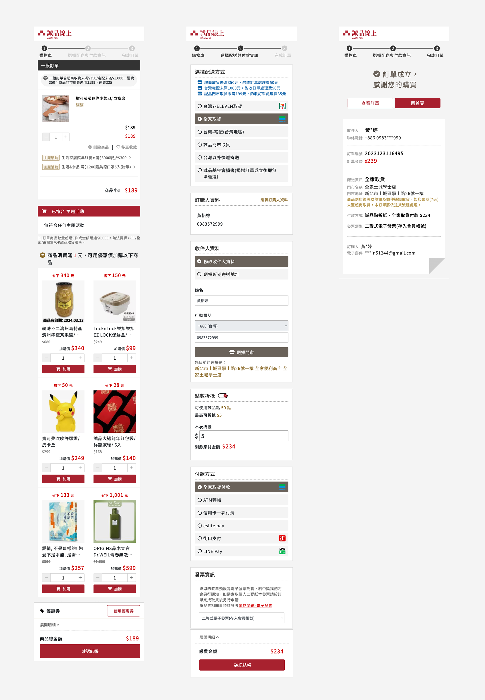
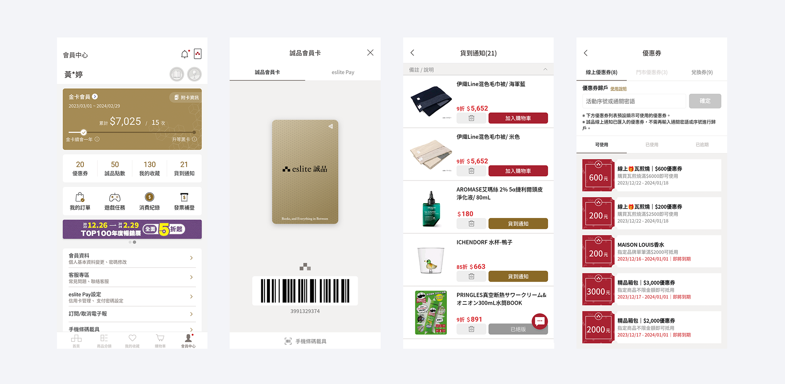

Design Approach & Decisions
Some of this work was assigned to me. But a lot of it came from problems I identified on my own — and then proposed to the team and management. I worked closely with product managers and other teams to move things forward.
1. Rethinking the Information Design: Books → Lifestyle EC
The old layout was built around books. To show lifestyle goods well, the whole information structure needed to change. I proposed a wider 1280px layout and redesigned the category navigation and banner placement. This gave non-book products a proper way to be shown on the platform.

Key Design Decisions
- Redesigned the IA from "book store layout" to "multi-category EC layout"
- Created clear paths for users with different goals — browsing, comparing, discovering
- Balanced visual impact and information density for each product category
2. Proposing the Move to Responsive Design
Mobile use was growing fast. I worked with the frontend team and proposed a switch to responsive web design. Moving from two separate versions (desktop and mobile) to one shared codebase made development faster and made it easier to add new features later.

Results
- One codebase works on desktop, tablet, and mobile
- Lower development and maintenance costs
- Better search ranking with SEO improvements
3. A Flexible Product Page for Both Books and Goods
Books and lifestyle products need different types of information. I designed a shared product page layout that could handle both — keeping things consistent while being flexible enough to fit each category's needs.

Design Points
- One flexible layout that works for both books and lifestyle goods
- Key information (details, reviews, related items) organized by priority
- Better related product suggestions to help users explore
4. Redesigning the Buying Flow
I looked at where users were dropping off in the buying process and redesigned the flow to 3 steps. Each step asks for less information, and users can always see how far along they are.

Improvements
- Reduced to 3 steps — removed the main drop-off points
- Less to fill in at each step, so users can focus on finishing
- Progress indicator keeps users from feeling lost
5. App Redesign Proposal: Connecting In-Store and Online
I brought a proposal to the product team and senior leadership to improve the app experience. This wasn't originally part of my scope. But I saw that keeping in-store and online accounts separate would hurt the overall experience — so I made the case and led the design work.

Results
- One shared membership for in-store and online
- Points and coupons work in both places
- A connected experience between the physical store and the online shop